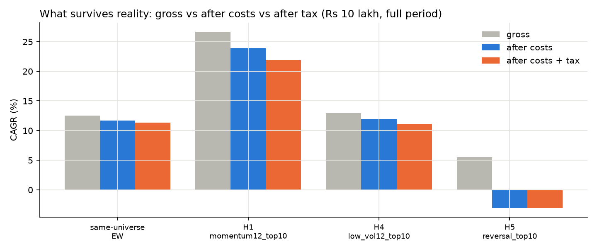
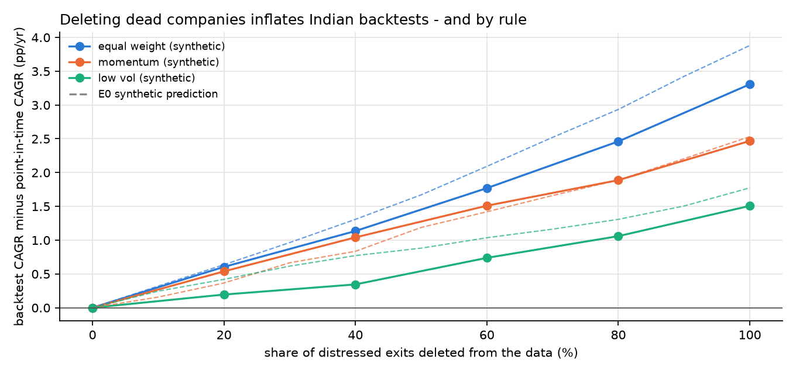
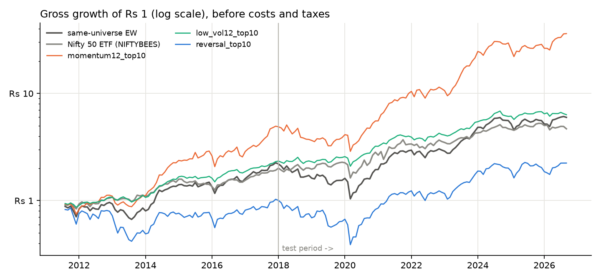
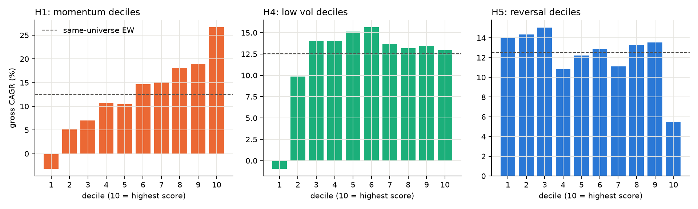
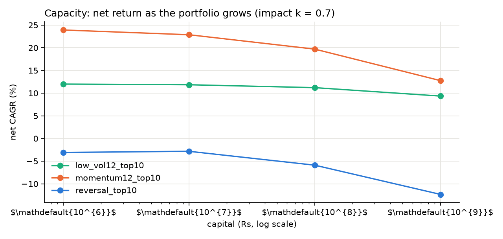

Do equity anomalies survive reality in India?
Momentum, low volatility and short-term reversal look good in most published backtests. This project re-tests them on every stock that traded on NSE, including the companies that later disappeared, with Indian trading costs and taxes, realistic liquidity and correction for the number of strategies tried. The rules were frozen in a pre-registration before any real result was computed.
What survives
Gross, after costs (₹10 lakh portfolio, dated statutory charges, spread and impact), and after Indian capital-gains tax, full period.

Pre-registered hypotheses
How much do data shortcuts inflate a backtest?
Free data sources silently drop companies that died. Drag the slider to delete a share of the distressed exits and see how much each strategy's backtest inflates. Solid: this dataset. Faint: the prediction from a synthetic market with known truth (E0).

Cost of one trade in India today
Delivery trade on NSE with a discount broker: STT, stamp duty, exchange and SEBI fees, GST and the depository charge. Spread and impact come on top.
Growth, deciles and capacity



Method in one paragraph
Prices come from NSE's daily bhavcopy files, which list every stock that traded each day. Securities are linked across symbol and ISIN changes. Splits and bonuses are adjusted from NSE's own corporate-action records (and, before 2010, a detector validated against those records). The universe is the 500 most liquid stocks at each month-end, known at the time. Portfolios are bought at the next day's open. Costs follow the rules in force on each trade date; taxes follow STCG/LTCG law by sale date, including the 2018 grandfathering and 2024 changes. Every variant tried is logged and corrected for with Hansen's SPA test and the deflated Sharpe ratio.